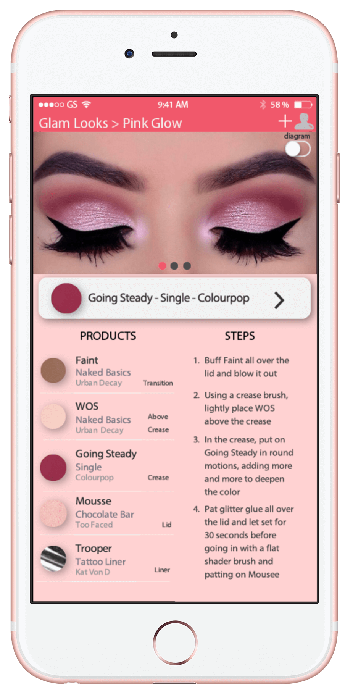

I couldn't ask for a better capstone project! ^1000 My passion for this project has grown every day, ^500 and I've learned so much about what it takes to be a successful startup.

BeautiBook is my Computer Science entrepreneurial capstone project. We're creating an application for the beauty community to organize, share, and discover looks and makeup products. Check us out at beautibook.github.io/app!
Social platforms such as Instagram, Pinterest, and Youtube are booming with makeup users sharing their favorite looks, products, and techniques. We were interested in the fact that none of these websites were quite built for this purpose, and our community was finding workarounds to best share their looks. A makeup look is so much more than what can be captured in a photo or video. We thought, what if we could provide this community with a platform to best allow them to organize, share, and discover their favorite makeup looks and products? That’s exactly what we are aiming to do with our Startup, BeautiBook.

One of the greatest learning experiences of this project has been our completion of over 10 empathy interviews with potential customers. We went to friends, family, and shoppers at popular makeup stores. I even interviewed a Sephora employee while getting my brows done.
iphone users, makeup users, social media users
To best learn about our customers, we prepped questions that would encourage story telling and elaboration. We avoided binary questions, leading questions, and suggesting answers. Here are soe sample questions:
“Oh I need this! Great idea!”
This is such a cool idea to have everything laid out for you to see! Definitely admirable! Keep up the good work!”
“this is really awesome!!!”